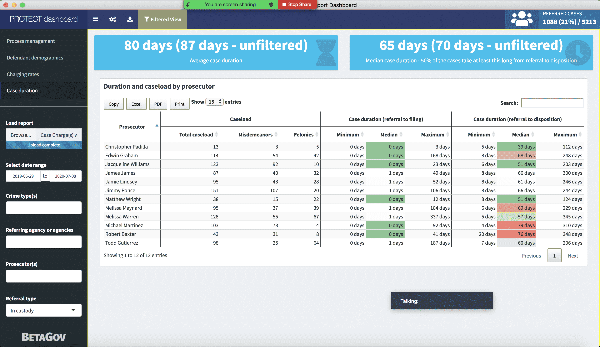
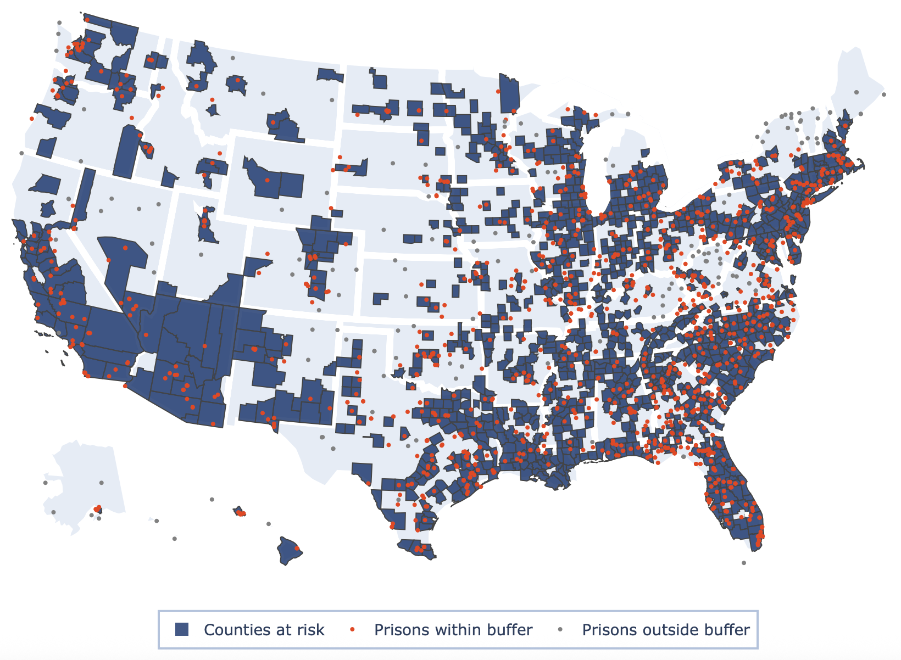
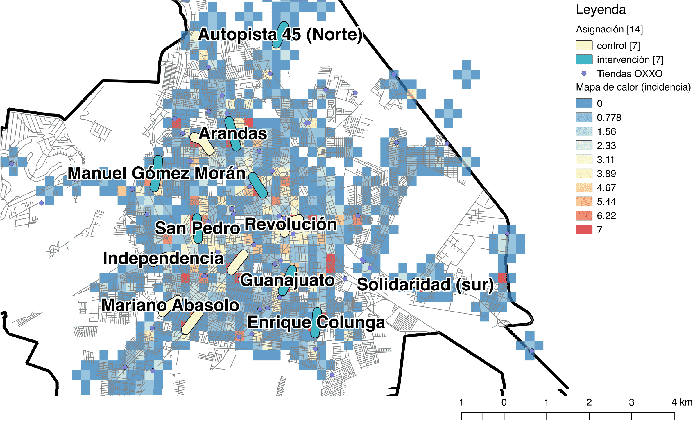
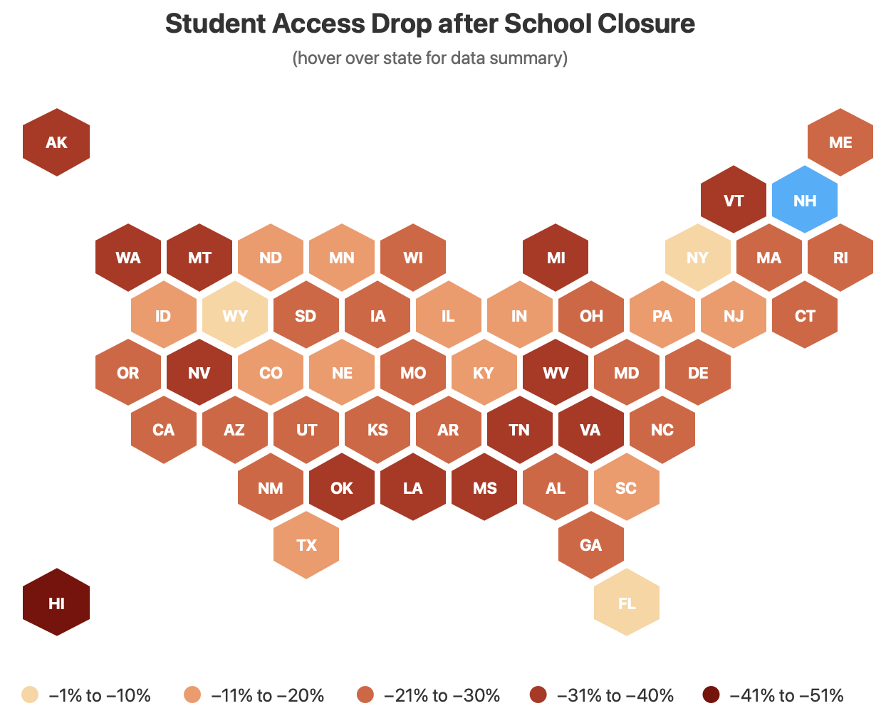

Research scholar and data scientist on Angela Hawken's Litmus team at the Marron Institute, under her supervision and Jonathan Kulick's. Litmus worked with public agencies and the people they serve to develop and rigorously test new ideas for improving the performance of the public sector. My work spanned designing and analyzing randomized control trials, developing dashboards and data tools, building statistical and machine learning models, creating data visualizations and maps, and working directly with agencies on their data collection and management practices. The work touched corrections, prosecution, policing, education, opioid policy, and COVID-19 response across 14 US states and 6 countries. I led or contributed to the data side of every project listed here, always with collaborators.
Investigadora y científica de datos en el equipo Litmus de Angela Hawken en el Marron Institute, bajo la supervisión de ella y de Jonathan Kulick. Litmus trabajaba con agencias públicas para desarrollar y probar rigurosamente ideas para mejorar el sector público. Mi trabajo abarcó ECAs, dashboards, modelos estadísticos, visualizaciones y trabajo directo con agencias. Correcciones, acusaciones, policía, educación, opioides y COVID-19 en 14 estados de EE.UU. y 6 países. Lideré o contribuí el componente de datos de cada proyecto, siempre con colaboradores.

A study using 20 years of prosecution data from Wisconsin, covering 2.7 million court cases. Prosecutors, judges, and public defenders all receive more resources when cases are filed as felonies rather than misdemeanors, creating a perverse incentive to charge more aggressively than the case warrants. We devised a methodology to measure this, focusing on cases where prosecutors have discretion to file as either felony or misdemeanor, with a particular focus on THC possession charges. We estimated that 9% of these discretionary cases were overcharged, with overcharging unevenly distributed across race, age, and gender. Defendants whose cases were overcharged were more likely to be incarcerated even when the case was eventually resolved as a misdemeanor. Funded by CZI and Charles Koch Foundation.
Un estudio usando 20 años de datos de acusaciones en Wisconsin, cubriendo 2,7 millones de casos judiciales. Fiscales, jueces y defensores públicos reciben más recursos cuando los casos se presentan como delitos graves en lugar de delitos menores, creando un incentivo perverso para acusar más agresivamente de lo que el caso amerita. Diseñamos una metodología para medir esto, enfocándonos en casos donde los fiscales tienen discreción para presentar cargos como delito grave o menor, con un enfoque particular en cargos de posesión de THC. Estimamos que el 9% de estos casos discrecionales fueron sobrecargados, distribuido desigualmente por raza, edad y género. Los acusados sobrecargados tenían mayor probabilidad de ser encarcelados incluso cuando el caso se resolvía como delito menor. Financiado por CZI y la Fundación Charles Koch.
One of the simplest analyses I did at NYU, one with outsized policy impact. We identified a pattern in referral data. Once communicated, the office began consistently diverting prostitution cases, preempting an ACLU demand. No RCT, no ML, no dashboard. Just looking at the data and telling someone what it said.
Uno de los análisis más simples que hice en NYU, con impacto de política desproporcionado. Identificamos un patrón en los datos. La oficina comenzó a desviar casos de prostitución, preemptando una demanda de la ACLU. Sin ECA, sin ML, sin dashboard.
Custom software for DA's offices. Scaled to three states. Led two CUSP capstones with Bianco and Dobler.
Software personalizado para fiscalías. Escalado a tres estados. Lideré dos proyectos de capstone CUSP.
RCT erasing race descriptors (Santa Clara). Different diversion lengths (Winnebago). Youth gun diversion evaluation (Kings County).
ECA sin descriptores raciales (Santa Clara). Duraciones de desviación (Winnebago). Desviación juvenil por armas (Kings County).
Built the data platform for the early release and transitional housing pilot with Illinois DOC, IHDA, and HUD. Positive outcomes. Statewide expansion. Led to $4M from the US Department of Labor.
Construí la plataforma de datos para el piloto de liberación anticipada y vivienda de transición. Resultados positivos. Expansión estatal. Llevó a $4M del Departamento de Trabajo.
Resulted in H.B. 3653, increasing eligibility for sentence credits. A direct policy outcome.
Resultó en H.B. 3653. Un resultado de política directo.
Interactive map synthesizing daily census and health data for state correctional facilities. Used for PPE, testing, early release. Noted in Sentencing Law and Policy and The Crime Report.
Mapa interactivo sintetizando datos diarios de censo y salud para instalaciones correccionales. Usado para PPE, pruebas, liberación anticipada.
Vitamin D, theater, mindfulness, financial education, Aggression Replacement Therapy, VR for staff, use of force reduction, suicide prevention. Highlighted by NIJ.
Vitamina D, teatro, mindfulness, educación financiera, VR para personal, reducción de uso de fuerza. Destacado por NIJ.
Women's incarceration reform (Pritzker / Women's Justice Institute). IF Project writing program (Alabama). Graduated Response Matrix for juveniles (Monterey). Text reminders (Santa Barbara, Monterey, Nashville). Randomization tool used 4+ years across DOJ SCF projects.
Reforma de mujeres (Pritzker). IF Project (Alabama). Matriz de Respuesta Graduada juvenil (Monterey). Recordatorios por texto. Herramienta de aleatorización usada 4+ años.


Design, implementation, and evaluation of the national Evidence-Based Policing policy. RCT on batch and community policing for business theft. Irapuato earned the national award in 2019.
Diseño, implementación y evaluación de la política nacional de Policía Basada en Evidencia. ECA sobre patrullaje. Irapuato ganó el premio nacional en 2019.
Multi-site analysis: full moon and criminal activity. Our shortest exercise. By far the most international press: Norway, Greece, Spain, Poland, Brazil, Vietnam, Costa Rica, Argentina, Italy, and more.
Análisis multi-sitio: luna llena y actividad criminal. Nuestro ejercicio más corto. El de más prensa internacional: Noruega, Grecia, España, Polonia, Brasil, Vietnam, Costa Rica, Argentina, Italia y más.
Cruising lights across 4 cities (Vallejo highlighted by NIJ). CT consent search policy (post-Floyd). Use of force / mental health (Glen Cove). Street-segment patrolling (Grand Prairie). Peace officer decals, uniforms. Peer support. VR for police training at 2019 ASEBP.
Luces de patrullaje en 4 ciudades (Vallejo por NIJ). Política de registros CT (post Floyd). Uso de fuerza / salud mental. Patrullaje por segmentos. Calcomanías, uniformes. VR para entrenamiento policial.
Three-year partnership with the US's largest EdTech provider. RCT on picture placement and performance. COVID-19 learning disparities study. Parent engagement experiments. NYU press release.
Asociación de tres años con el mayor proveedor de EdTech de EE.UU. ECA sobre ubicación de imágenes. Estudio de disparidades COVID-19. Experimentos de involucramiento de padres.

OUD detection and rapid-referral. Naloxone distribution evaluation (PA). VR modules for OUD treatment (OH). Data infrastructure for community supervision. The NYU COSSAP Collaborative as community of practice.
Detección de OUD y derivación rápida. Evaluación de naloxona (PA). VR para tratamiento (OH). Infraestructura de datos. NYU COSSAP Collaborative como comunidad de práctica.
Canada: Barrie Police (Situation Table, youth camp, COVID IPV, weather/vehicle thefts). Colombia: Bogotá Citizen Participation Secretariat; data practices at Red Cómo Vamos. Nigeria: Joy Bringers at Lagos Maximum-Security Prison. Australia: Victoria DJCS crime prevention dashboards. South Africa: Lionesses of Africa women entrepreneurs survey.
Canadá: Policía de Barrie (Mesa de Situación, campamento juvenil, VPI por COVID). Colombia: Secretaría de Participación Ciudadana de Bogotá; Red Cómo Vamos. Nigeria: Joy Bringers en Lagos. Australia: dashboards Victoria. Sudáfrica: Lionesses of Africa.
Stratified randomization tool for RCTs (used 4+ years, DOJ-funded, downloadable ↗). COVID-19 Prison Risk Map. DA dashboards (WI, TX, CA). Graduated Reintegration data platform (IL). Web randomizer (GitHub ↗).
Herramienta de aleatorización (4+ años, DOJ, descargable ↗). Mapa COVID-19. Dashboards (WI, TX, CA). Plataforma Reintegración Graduada (IL). Randomizador web (GitHub ↗).